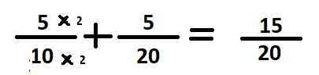
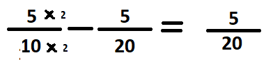

ADDING AND SUBTRACTING FRACTIONS WITH LIKE AND UNLIKE DENOMINATORS
“Like fractions” are fractions with the same denominator. You add the top like normal numbers and write it over the common denominator. Similarly when subtracting fractions if the denominator is the same you will simply subtract the numerator and write it on top of the common denominator.
Example Addition with like denominator:

Example Subtraction with like denominator:
Before you can add or subtract fractions with different denominators, you must first find equivalent fractions with the same denominator, like this:
- Find the smallest multiple (Lowest Common Multiple) of both numbers.
- Rewrite the fractions as equivalent fractions with the LCM as the denominator).
Example Addition with unlike denominator:
Example Subtraction with unlike denominator:
